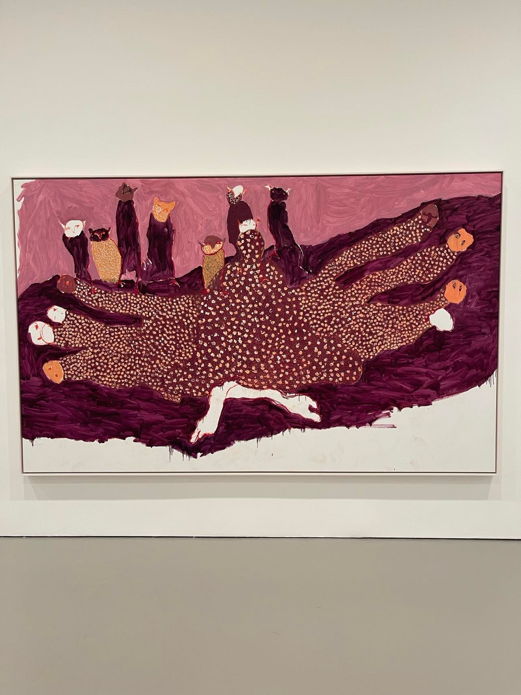

Zvandaona Portia Zvavahera at David Zwirner. Photo by Lily Sullivan.Zimbabwean artist Portia Zvavahera presents her first solo show in NYC at David Zwirner at the west 19th location.
Dichotomies of emotion punctuate the expressive paintings that bring to mind some of life’s most intense vacillations. Liminality is of central focus as dreams find resolution in the artist’s large scale paintings as she explores pleasure, life, love, and their opposites. Portia is influenced by the figurative work of Thomas Mukarobgwa from the 1960s.
The artist has presented at The National Gallery of Zimbabwe and the 55th Venice Biennale.
Ndakaoneswa murima by Portia Zvavahera is on view through December 18th at David Zwirner on 525 West 19th Street in New York.